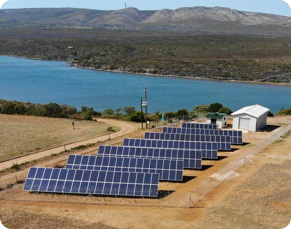

Solar-Powered Desalination Plants: Addressing Water Scarcity Challenges
Solar-Powered Desalination PlantsExploring the Solution to Water Scarcity
The renewable energy sector is experiencing rapid growth, leading to an increase in green jobs. From
solar panel installers to wind turbine technicians, these jobs not only support environmental
sustainability but also drive economic development. As demand for renewable energy continues to soar,
the renewable energy sector is poised to become a key driver of employment and innovation.

Desalination, the process of removing salt and other impurities from seawater, has long been recognized as
a
potential solution to water scarcity. However, traditional desalination methods often require significant
energy inputs, contributing to environmental concerns and high operating costs. Solar-powered desalination
plants address these challenges by utilizing renewable energy sources to power the desalination process.
Solar energy, abundant in many water-stressed regions, offers a clean and sustainable power source for
desalination operations. By harnessing solar energy, these plants minimize their environmental impact and
reduce reliance on fossil fuels.
One of the key advantages of solar-powered desalination plants is their ability to operate independently
of the grid. This off-grid capability makes them particularly well-suited for remote or coastal areas with
limited access to electricity infrastructure. By decentralizing water production, these plants enhance
water security and resilience in vulnerable communities.
Furthermore, advancements in desalination technology have improved efficiency and reduced costs, making
solar-powered desalination increasingly viable. Innovations such as membrane distillation and reverse
osmosis systems optimize water treatment processes, resulting in higher freshwater yields and lower energy
consumption.
The implementation of solar-powered desalination plants offers numerous benefits beyond addressing
immediate water scarcity challenges. By providing access to clean drinking water, these plants improve
public health and sanitation, reducing the incidence of waterborne diseases. Additionally, they support
economic development by creating jobs and stimulating local industries.
In conclusion, solar-powered desalination plants represent a promising solution to water scarcity
challenges worldwide. By harnessing the abundant energy of the sun to produce clean drinking water, these
plants offer a sustainable and environmentally friendly alternative to traditional desalination methods.
As technology continues to advance and costs decrease, solar-powered desalination has the potential to
play a significant role in ensuring water security for future generations.